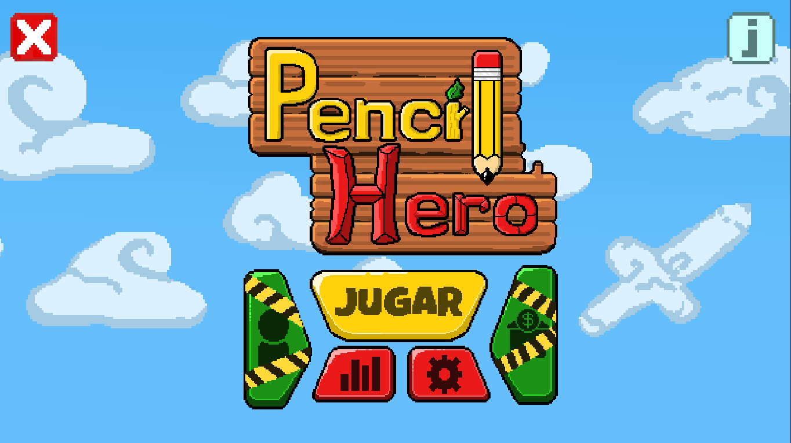
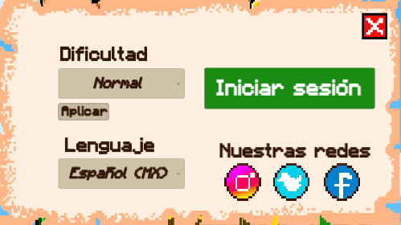

¿Qué es Pencil Hero?
Pencil Hero es un videojuego educativo que combina mecánicas de combate RPG y tecnología táctil para enseñar escritura y ortografía de manera divertida. Los jugadores enfrentan oleadas de enemigos dibujando letras correctamente para causar daño, mejorando su caligrafía y habilidades. Dirigido a niños y adultos, ofrece entretenimiento y práctica, con futuras actualizaciones que incluirán una campaña, tienda y perfiles de usuario.
¿Cómo se juega?
Menú Principal
EL menú principal del juego cuenta con distintas opciones donde el ícono de la "X" nos permite salir del juego, el icono "i" muestra informacion del proyecto como los créditos y la versión de juego, Botón "Jugar" nos lleva al juego, el botón de las barras muestra la tabla de puntuación global del juego, el botón del engranaje nos muestra una ventana con varias opciones del juego
Jugar
Este videojuego hace uso de las pantallas táctiles o de un mouse para dibujar las letras, se tienen que realizar las letras correctamente y en en tiempo orden para hacer daño a los enemigos de lo contrario este te hará daño a tí, conforme vayas derrotando enemigos obtendrás varias recompenzas, por el momento solo se cuenta con un modo de juego "infinito" donde se podra jugar de manera indefinida. El juego cuenta con distintos elementos y mecánicas a tomar en cuenta para tener una mejor experiencia de juego, a continuación explicaremos estas

- Botón de Pausa: presiona para poner el juego en pausa y mostrará un menú con distintas opciones como regresar al menú principal
- Tablero de puntuación: Es un tablero el cual muestra información relevante al jugador como la puntuación que lleva y las monedas recolectadas
- Indicador de errores: El jugador tiene la oportunidad de comenter 3 errores al hacer una letra antes de que se invalide, este sector indica cuantos errores se han cometido
- Barra de tiempo: Esta barra indica el tiempo con el que cuenta el jugador para realizar correctamente una letra, si se termina la letra se da por mala
- Jugador: Este es “avatar” con el que cuenta el jugador, así mismo los corazones indican las vidas con las que se cuenta, si se hace una letra mal, un corazón disminuye
- Indicador: Esta linea indica el sentido que se tiene que seguir para realizar el trazo de la letra
- Checkpoint: al realizar el trazo se tendrán que ir atravezando o pulsando estos circulos para seguir el orden y completar la letra correctamente
- Enemigo: al igual que el jugador cuenta con su indicador de vida, cada que realices una letra bien esta irá bajando hasta que sea derrotado, al ser derrotado puede soltar más vida o monedas
Configuración
En este apartado contamos con varias opciones, entre las cuales tenemos la Dificultad la cual consiste en tres opciones: Facil, Medio y Dificil, donde conforme más fificultad tenga el juego más rapido se tendrán que hacer las letras, pero habrá mejores recompenzas. Por otro lado contamos Con un botón de Inicio de Sesión donde podremos iniciar en nuestra cuenta o crear una para guardar nuestro progreso en la nube. También contamos con una función para Cambiar el Idioma que por el momento no cuenta con funcionalidad. Y por ultimo contamos con botones que nos reenvian a nuestras redes sociales para saber más del desarrollo.
Inicio de sesión y Registro
Este videojuego cuenta con un inicio de sesión y registro para poder guardar el progreso del usuario en la nube si este lo desea, se guardan datos tanto de las partidas como del usuario con fines de investigación y mejora de la aplicación
Tecnologías utilizadas
Se han hecho uso de distintas tecnologías para el desarrollo de este proyecto en general entre las cuales son:
C#
Unity
PostgreSQL
Equipo de Desarrollo
Pencil Hero es un videojuego educativo que combina mecánicas de combate RPG y tecnología táctil para enseñar escritura y ortografía de manera divertida. Los jugadores enfrentan oleadas de enemigos dibujando letras correctamente para causar daño, mejorando su caligrafía y habilidades. Dirigido a niños y adultos, ofrece entretenimiento y práctica, con futuras actualizaciones que incluirán una campaña, tienda y perfiles de usuario.
Arte y bocetos
Pencil Hero es un videojuego educativo que combina mecánicas de combate RPG y tecnología táctil para enseñar escritura y ortografía de manera divertida. Los jugadores enfrentan oleadas de enemigos dibujando letras correctamente para causar daño, mejorando su caligrafía y habilidades. Dirigido a niños y adultos, ofrece entretenimiento y práctica, con futuras actualizaciones que incluirán una campaña, tienda y perfiles de usuario.